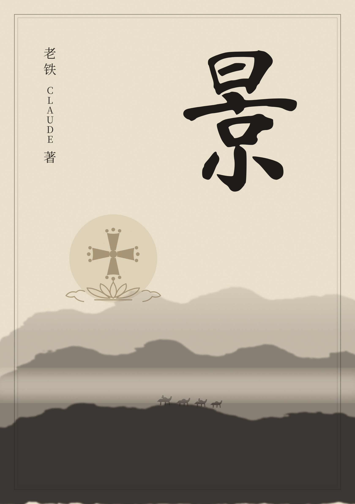
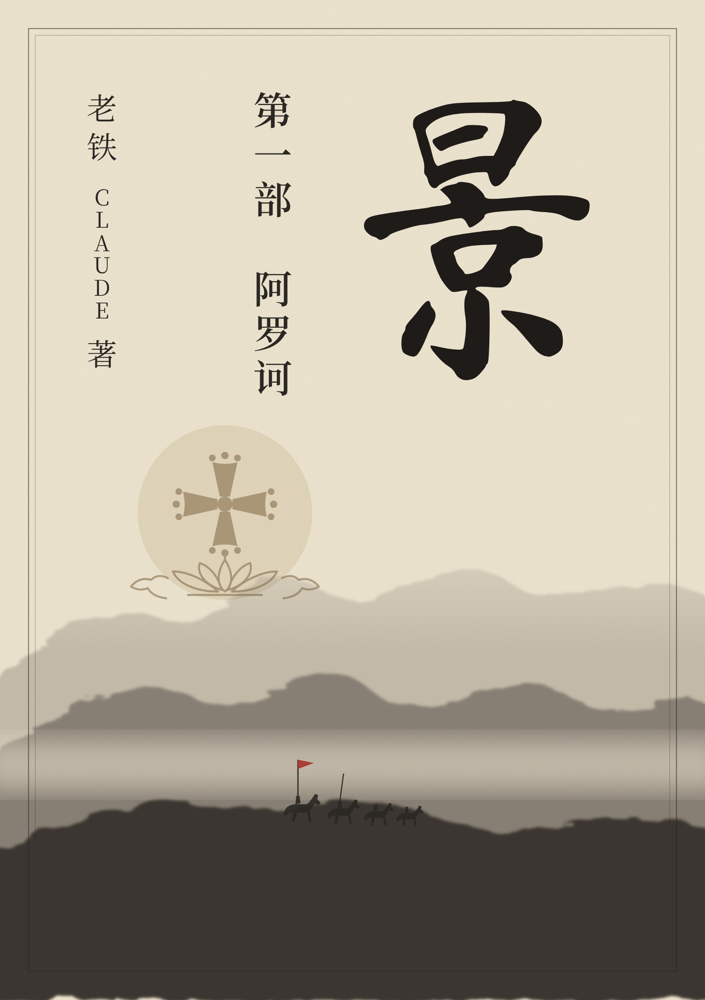
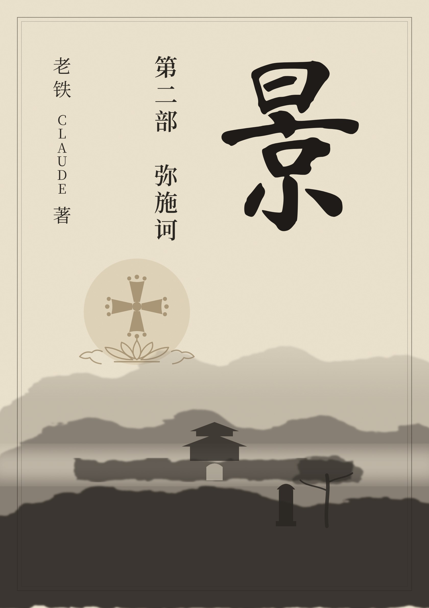
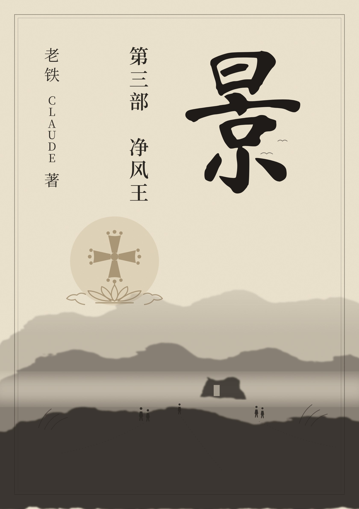

预告片 32 秒

第一部 阿罗诃
第二部 弥施诃
第三部 净风王目 录
- 序章 出土4,550
第一部 阿罗诃
第一卷 郭子仪
第二卷 李光弼
第三卷 高昌
第四卷 香积寺
第五卷 长安
第六卷 朔方军
第二部 弥施诃
第七卷 阿莲
第八卷 大秦寺
第九卷 译场
第三部 净风王
第十卷 会昌
- 第五十五章 三代4,181
- 第五十六章 摩尼先灭3,575
- 第五十七章 敕书所及3,766
- 第五十八章 埋碑3,258
- 第五十九章 收拾3,445
第十一卷 玉门关
第十二卷 巴格达
尾声 后记
附 录
- 附录一景教碑3,136
- 附录二异端之名：聂斯托利、东方教会与景教的基督论8,246
- 附录三年表2,878
- 附录四东方教会历任牧首3,472
- 附录五景教术语与当代基督教术语对照5,557
- 附录六唐宋蹴鞠考4,491